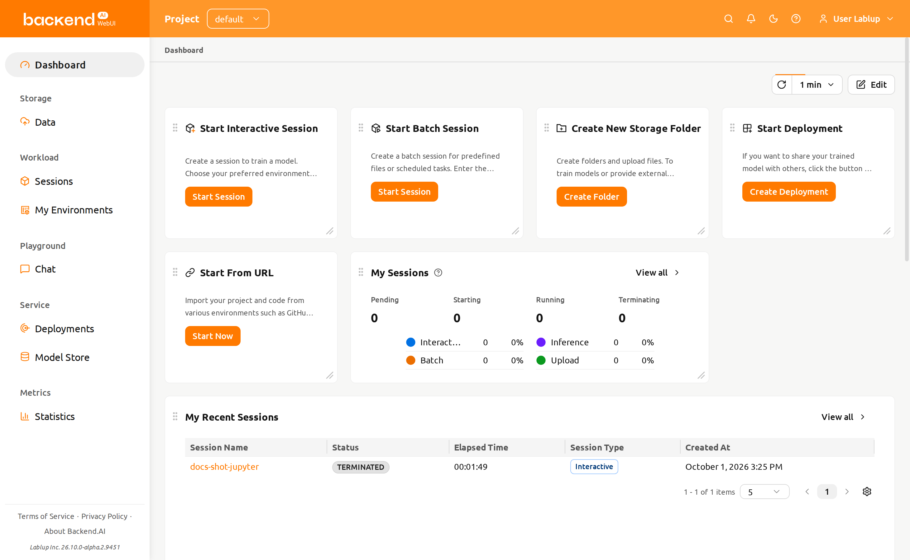
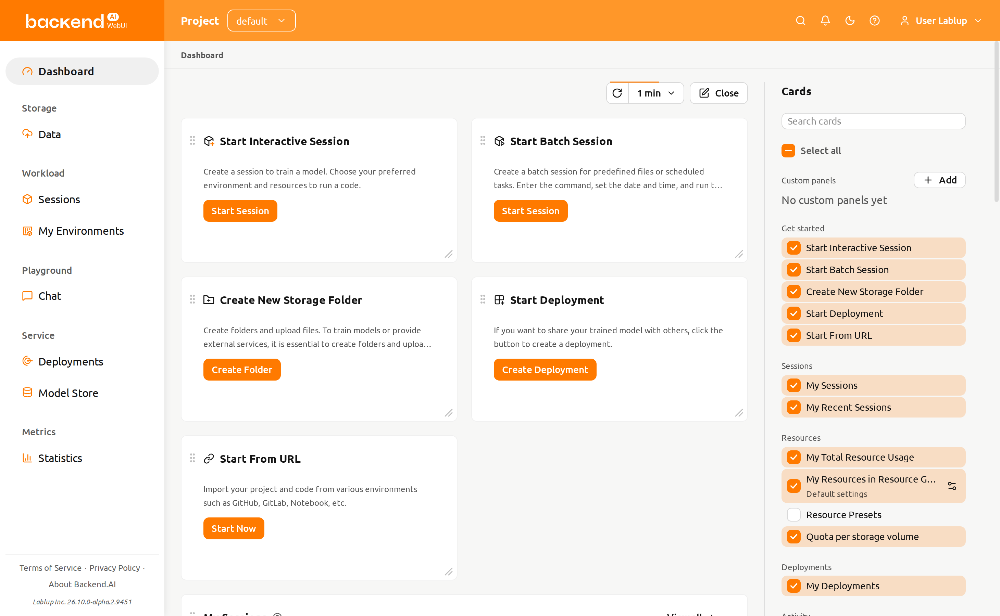
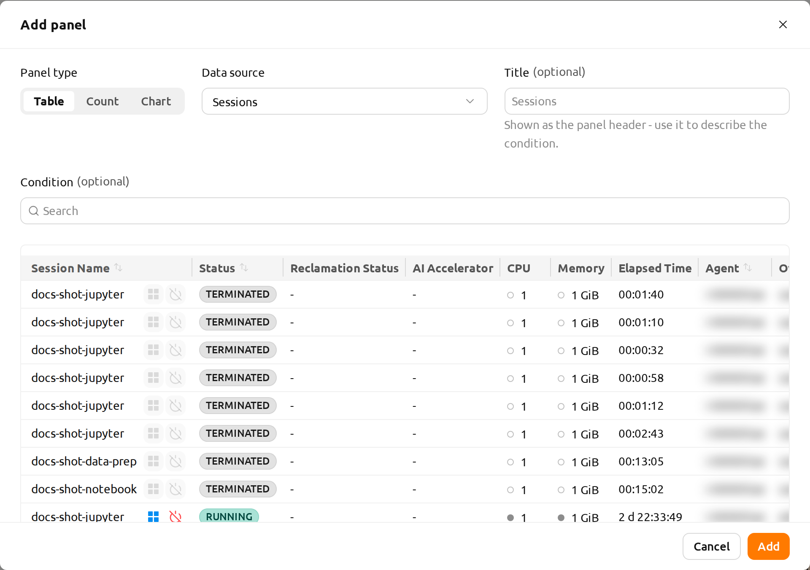
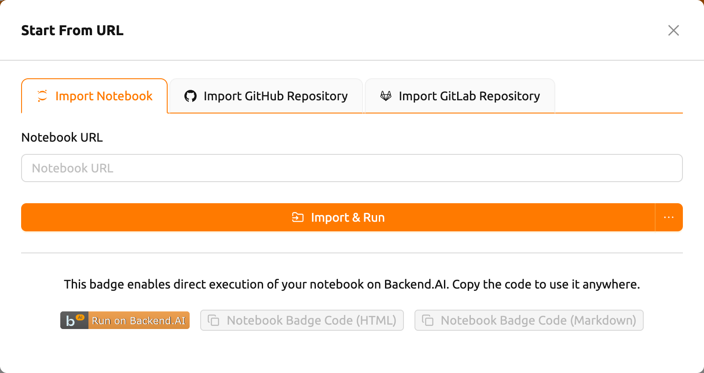
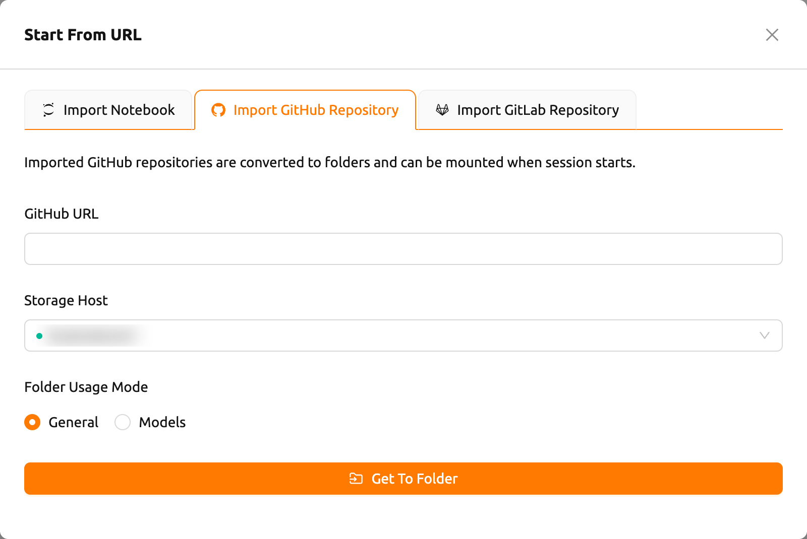
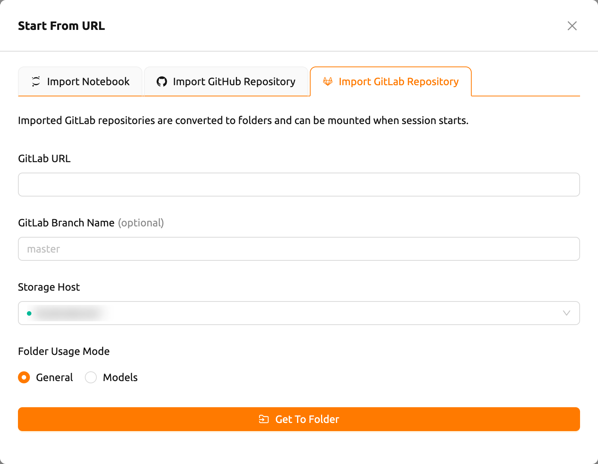
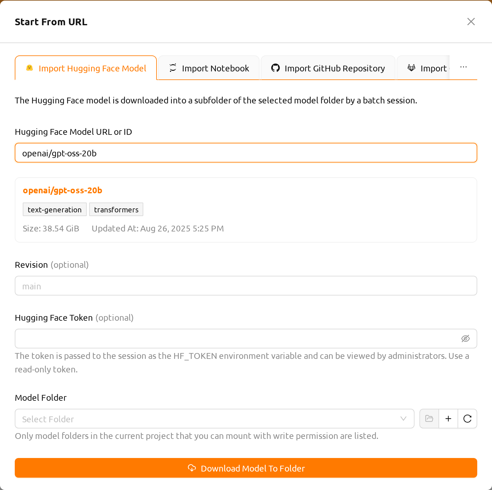

Dashboard#
The Dashboard is the page you land on after signing in. It is made up of cards, and the cards at the top are shortcuts to the tasks you usually start with. Each one names a task, describes it in a sentence, and has a button that starts it:
Start Interactive Session: Click Start Session to open the session launcher, where you pick an environment and resources and work with your code interactively.
Start Batch Session: Click Start Session to open the session launcher with the session type set to batch, for a command that runs to completion on its own.
Create New Storage Folder: Click Create Folder to create a storage folder for the files and data your sessions use.
Start Deployment: Click Create Deployment to serve a trained model so that others can use it. This card appears only when your administrator has enabled model serving.
Start From URL: Click Start Now to import a Jupyter notebook, a GitHub or GitLab repository, or a Hugging Face model from its URL. See Start from URL.

The cards below them summarize your sessions, resource usage and recent activity in the current project:
My Sessions: Shows your sessions in the current project by status, and the active ones by session type such as Interactive, Batch, Inference, and Upload.
My Recent Sessions: Lists the sessions you created most recently, newest first.
My Total Resource Usage: Shows what your sessions use across all resource groups and projects. When multiple limits (domain, project, or keypair) apply, the most restrictive one takes effect.
My Resources in Resource Group: Shows how much resource you have used and how much is still free in the card's resource group.
Total Resources in Resource Group: Summarizes the used and free resources of the card's resource group. The data is aggregated from all agents that belong to the group.
Agent Statistics: Shows the total resources of all agents in the system.
Quota per storage volume: Shows the quota available on each storage volume. When no storage host supports quota, the card shows a notice instead.
My Deployments: Lists your model deployments with the health of their replicas.
My Activity: Lists your own audit log entries for the period the card is set to.
The Total Resources in Resource Group and Agent Statistics cards may not be visible depending on your system configuration.
Project admins and superadmins also have a Dashboard of their own in the admin menu, with cards for the project or for the whole cluster.
Customizing the Dashboard Layout#
You can rearrange the board at any time — there is no mode to enter first:
- Move cards: Drag a card by its header to reposition it on the board.
- Resize cards: Drag the bottom-right corner of a card to adjust its size. Each card has a minimum size to ensure its content remains readable.
Click Edit to open the edit sidebar, and Close to hide it again. The sidebar lists every card the page offers, grouped by topic: select a card to put it on the board, and clear it to take it off.

Your arrangement is saved to your account on the server, so it follows you to every browser you sign in from. To discard it and restore the default cards and arrangement, click the Reset layout button at the bottom of the edit sidebar and confirm. Resetting the layout does not remove your custom panels.
When the WebUI is updated with new dashboard cards, those cards will automatically appear on your dashboard even if you have a saved layout.
Card Settings#
A card that reads a resource group or a time range keeps a saved default. Open Default card settings for that card in the edit sidebar to choose the values the board opens with; the picker in the card's header changes them for the current visit only.
Custom Panels#
The edit sidebar also lists your custom panels. A custom panel shows a data source you select, narrowed by a condition you define. The panel itself shows only a title and its data, so give the panel a title that describes its condition.
To add a panel, click the Add button in the sidebar. The panel dialog contains the following fields. Panel type and Data source are required — the dialog will not submit until both are chosen.
- Data source: The data source the panel lists. Choose Sessions, Deployments, or Data & Storage.
- Panel type: How the panel displays the data source. Choose Table, Count, or Chart. For the Sessions data source, Grid is also offered.
- Title: An optional panel title. When omitted, the data source name is used.
- Condition: A property filter that narrows the rows shown in the panel.
A live preview below the fields shows the rows matching the current condition. Sorting a column in the preview sets the panel's sort order. Click Add to place the panel on the board.

Deployments panels list the project's model deployments, using the same table as the Deployments page: name, status, replica summary, model, and created at. Clicking a deployment's name opens its detail page.
Chart draws the matching items as a chart. Compare groups chart types (Donut, Pie, Bar, Radar) count the items grouped by the property chosen under Group by; Created over time chart types (Line, Area, Column) count the items created in each interval of the selected time range. Turn on Show table to list the matching rows under the chart on the panel.
Grid shows the session resource grid: each matching session's allocated resources as unit cells, colored by utilization. Clicking a session opens its detail drawer, the same as clicking a row in the table. The grid shows at most the first 100 matching sessions; a notice appears when there are more.
The grid's display settings — resource or kernel mode, which resource or metric to show, memory unit, and layout — are chosen in the Add/Edit panel dialog's live preview and saved with the panel. The panel itself shows no controls for these settings, so create a second panel if you want a different view.
Grid is an experimental feature. It is offered in the Panel type selector only when Session resource grid view is turned on under Experimental features. If it is turned off later, existing Grid panels keep their saved configuration but display as the session table until the setting is turned back on.
To change a panel's data source, panel type, condition, or title later, click the pencil (Edit) icon next to the panel in the sidebar — or in the panel's header on the board — and save your changes. To remove a panel, click the trash (Delete) icon and confirm in the popup.
Sessions and Deployments panels list data for the current project and are available to every project member. Data & Storage panels are available to superadmins only. A panel whose data source your role cannot query remains listed in the sidebar but is not shown on the board.
Automatic Refresh#
The refresh control on the dashboard bar sets how often every card refreshes — Off, or an interval from 5 seconds to 10 minutes — and refreshes every card at once when you click it.
Start from URL#
The Start From URL dialog has one tab per import source: Import Notebook, Import GitHub Repository, and Import GitLab Repository. An additional Import Hugging Face Model tab appears when the experimental Hugging Face import is turned on.
Import notebook#

Enter a Jupyter Notebook URL (must end with
.ipynb) in the Notebook URL fieldClick Import & Run to automatically create a session and open the notebook in Jupyter
You can also click the dropdown arrow next to the button and select Start with options to customize the session environment before launching.
The notebook is downloaded from inside the compute session (its bootstrap
script runs curl -O <url>), so the URL must be reachable from the session.
Local addresses such as localhost or 127.0.0.1 resolve to the session
container itself — not your own machine — and will not work. Use a URL that is
reachable from the compute session.
Turn off your browser's pop-up blocker so the running notebook window can open automatically. If there are not enough resources to start the session, the imported notebook will not run.
At the bottom of the tab, you can generate a "Run on Backend.AI" badge code. Copy the HTML or Markdown badge code to embed a direct-launch link in your project documentation.
Import GitHub repository#

- Enter a valid GitHub repository URL in the GitHub URL field
- Select a Storage Host where the repository will be saved
- Optionally set the Folder Usage Mode (General or Models)
- Click Get To Folder to clone the repository into a new storage folder
The imported repository is converted to a storage folder that can be mounted when starting a session.
Import GitLab repository#

- Enter a valid GitLab repository URL in the GitLab URL field
- Optionally specify a GitLab Branch Name (defaults to
master) - Select a Storage Host where the repository will be saved
- Optionally set the Folder Usage Mode (General or Models)
- Click Get To Folder to clone the repository into a new storage folder
Import Hugging Face Model#
The Import Hugging Face Model tab downloads a model from Hugging Face into one of your model folders, so you can later mount it in a compute session or serve it as a deployment.
This tab is hidden until you turn on Import from Hugging Face in the Experimental features section of the User Settings page. Experimental features may change or be removed in future updates.

Enter the model in the Hugging Face Model URL or ID field. Both a model page URL such as
https://huggingface.co/openai/gpt-oss-20band a plain model ID such asopenai/gpt-oss-20bare accepted. Addresses that point to a dataset, a space, or any other non-model page are rejected.Once the field contains a valid model, the dialog looks it up on Hugging Face after a short pause — a loading indicator shows while it checks — and displays a preview card below the field before you start the import. The card shows the model ID as a link to its Hugging Face page, the model's task and library tags, its size, and when it was last updated.
Optionally enter a Revision — the branch, tag, or commit of the model repository to download. Leave it empty to download the default revision. If the address you entered already contains a revision, that revision is used.
Optionally enter a Hugging Face Token. A token is required for gated or private models.
Select the Model Folder to download into. As the helper text under the field notes, only model folders in the current project that you can mount with write permission are listed — the download session writes into the folder, so folders you can only mount read-only are excluded. The buttons next to the selector let you open the selected folder, create a new model folder, and refresh the list.
Click Download Model To Folder.
The dialog closes and Backend.AI starts a batch session that performs the download. Because the download runs inside that session, you can follow its progress on the Sessions page; the model is ready once the session finishes successfully. If the session fails, the download did not complete and the model is not ready to use.
The model is stored in a subfolder named after the model, inside the folder you
selected — openai/gpt-oss-20b, for example, is downloaded to gpt-oss-20b/.
Several models can therefore share a single model folder.
The token is passed to the download session as the HF_TOKEN environment
variable and can be viewed by administrators. Use a read-only token.
The tab downloads into model folders, so it is only available when the deployment feature is enabled for your account. Large models take a long time to download and consume the storage quota of the target folder.